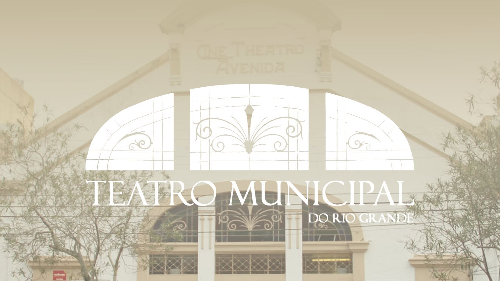

Em cartaz:

AAAAAAAA AAAAA AAAAAAAA AAA AAAA AAAAAA
AAAAAAAA AAAAA AAAAAAAA AAA AAAA AAAAAA
AAAAAAAA AAAAA AAAAAAAA AAA AAAA AAAAAA
AAAAAAAA AAAAA AAAAAAAA AAA AAAA AAAAAA
Sobre a casa:
O Teatro Municipal do Rio Grande completou 93 anos de existência artística na cidade do Rio Grande em 2022. Está vinculado à SCEL – Secretaria de Município da Cultura, Esporte e Lazer. Administrado por uma diretora e equipe técnica, a instituição conta também com o apoio da Associação Pró - Cultura Teatro Municipal. Esta Casa Cultural possui 348 lugares, destes, dois são reservados para pessoas em cadeira de rodas. Apresenta uma boa qualidade acústica, ambiente climatizado e conforto nas poltronas estofadas, disponibilizadas ao público presente, além de oportunizar aos artistas quatro camarins, entre eles, um privado e três coletivos.